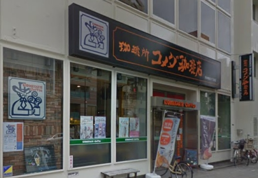
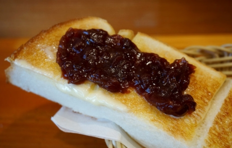
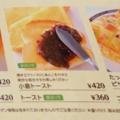
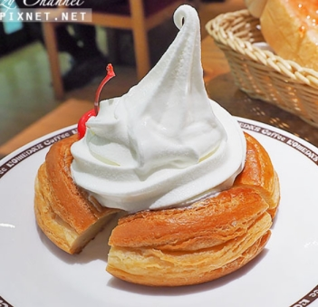
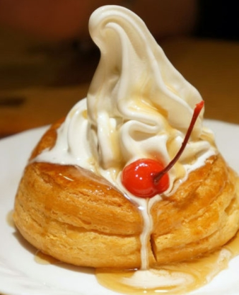
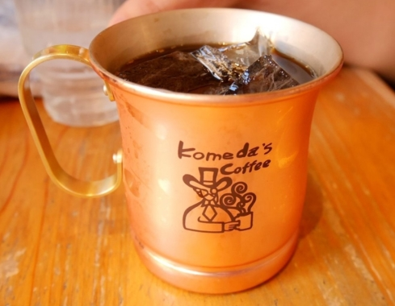
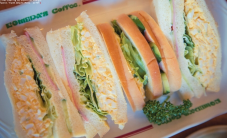

回上一頁
コメダ珈琲店 [官網] 營業時間: 7:00~23:00

有中文菜單 有禁菸區與吸菸區座位
把紅豆泥抹在吐司上後加上奶油 就是名古屋的特色吃法「小倉吐司」

小倉トースト 420

冰與火(冰淇淋丹麥麵包) シロノワール 大600 小400


金のアイスコーヒー金色的冰咖啡520

什錦三明治

點三明治要看清楚, 不要點沒有烤的
BLOG參考 BLOG參考 BLOG參考 BLOG參考(台灣版有中文菜單)